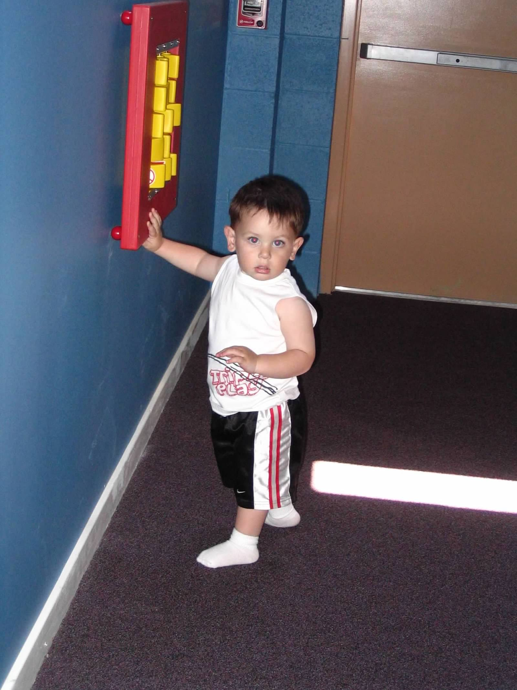
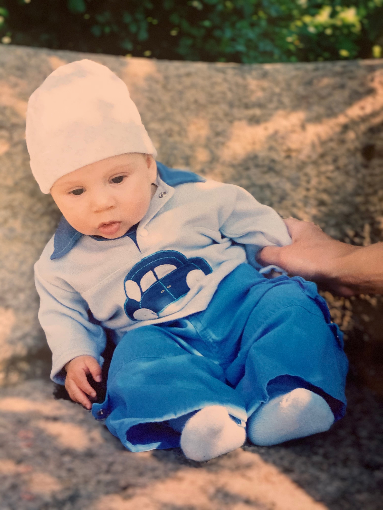

{%extends "layout.html"%}
{%block content%}
About Us
About Us
Foodtruck Finder is a student developed software that aims to inform
other students with current information regarding all food trucks in
the Drexel and UPenn area.
Meet Our Team

David Liberatore — Backend Developer dal366@drexel.edu

Andre Nunes Da Silva — Fullstack Developer an3243@drexel.edu

 Alex Troeschel — Data Analyst
Alex Troeschel — Data Analyst Kyle Cuba — Website Developer
Kyle Cuba — Website Developer